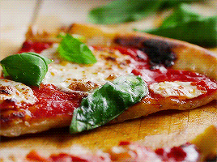

TastyTable - Recipe Collection
Margherita Pizza

Ingredients:
- 1 pizza dough (store-bought or homemade)
- 1/2 cup pizza sauce
- 1 1/2 cups fresh mozzarella, sliced
- 1-2 tomatoes, sliced
- Fresh basil leaves
- Olive oil for drizzling
- Salt and black pepper to taste
Instructions:
- Preheat your oven to the highest temperature (usually around 475°F or 245°C).
- Roll out the pizza dough on a floured surface to your desired thickness.
- Transfer the rolled-out dough to a pizza stone or a baking sheet.
- Spread the pizza sauce evenly over the dough, leaving a border for the crust.
- Arrange the sliced mozzarella and tomatoes on top of the sauce.
- Bake in the preheated oven until the crust is golden and the cheese is melted and bubbly.
- Remove from the oven, sprinkle with fresh basil, drizzle with olive oil, and season with salt and black pepper.
- Slice and enjoy your delicious Margherita Pizza!